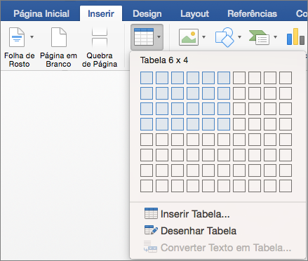
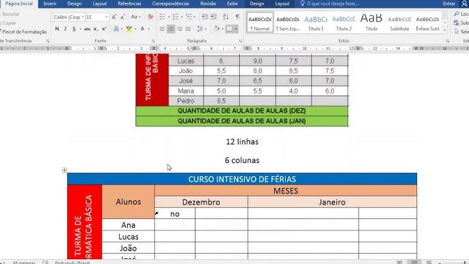

Uma tabela é uma estrutura bidimensional de informação (linhas e colunas) criada para ordenar, relacionar e tornar legível um conjunto de dados ou informações. Seu objetivo não é apenas armazenar dados, mas produzir sentido, permitindo comparação, classificação, síntese e análise.
A tabela funciona como um atalho mental entre o dado bruto e a compreensão.
Uma tabela expressa relações: comparação, hierarquia, correspondência e temporalidade. Cada linha responde ao “o quê” e cada coluna ao “sob qual aspecto”, modelando a realidade segundo critérios definidos pelo autor.
A tabela constitui um micro-sistema de informação coerente e fechado.

A tabela é precisa, detalhada e analítica, respondendo à pergunta “quanto exatamente?”. O gráfico é sintético e interpretativo, respondendo “como isso se comporta?”.
Tabela é uma tecnologia intelectual de organização do conhecimento, que transforma dados ou informações dispersas em um sistema legível de relações, permitindo análise, comparação e tomada de decisão.